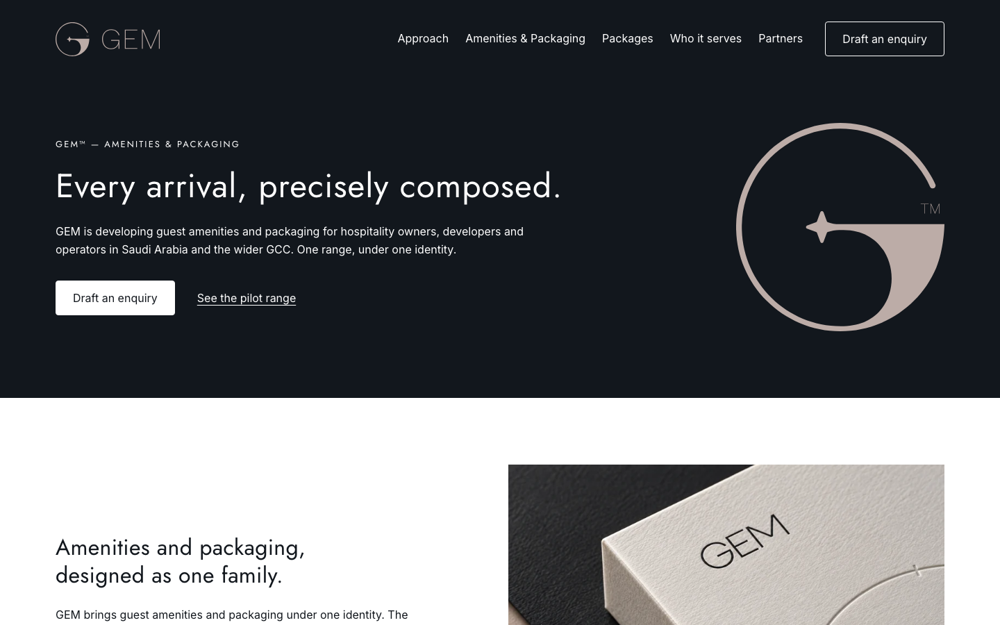
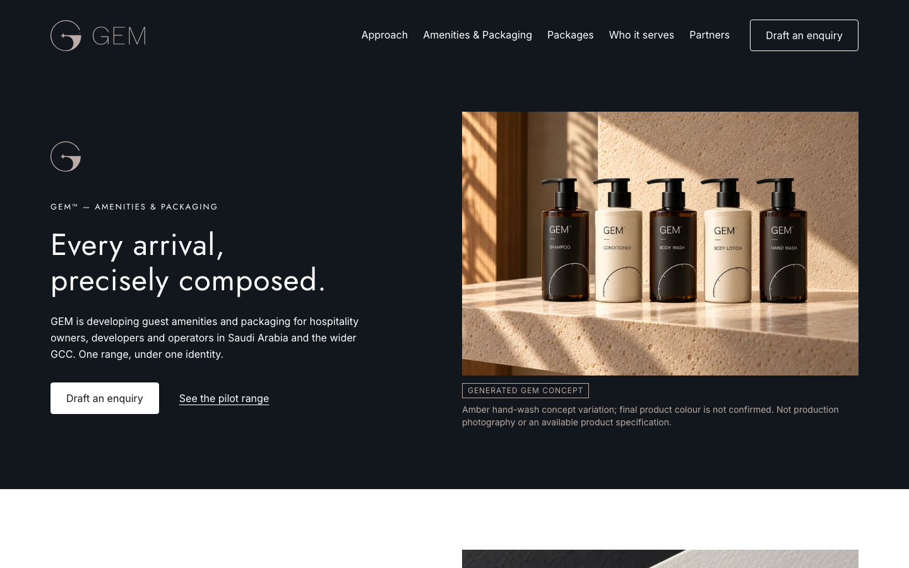
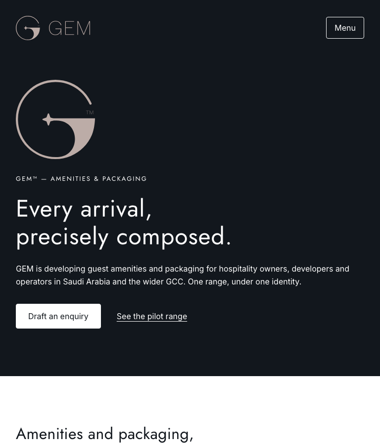
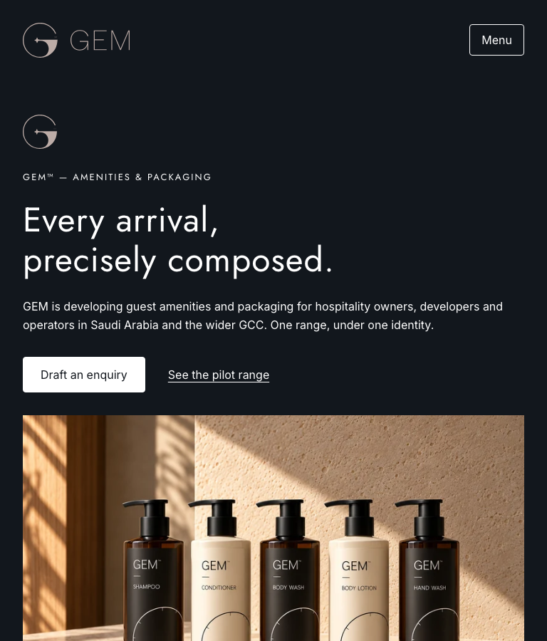
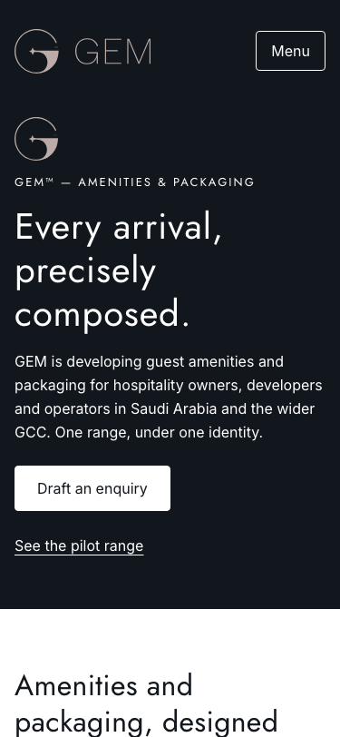
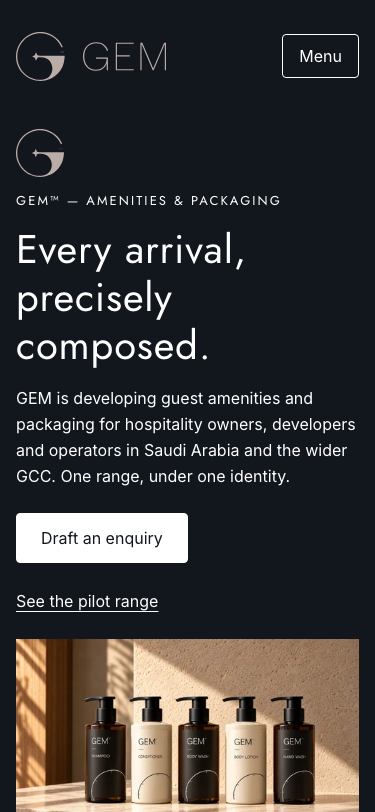
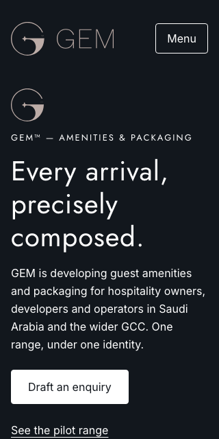
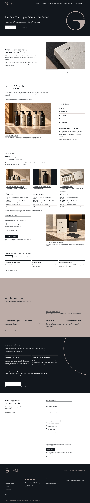
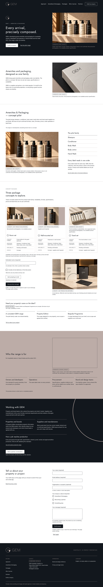

GEM website refinement
v0.5.4 · PROPOSED WORKING PREVIEW · 13 October 2026
Existing concept imagery now introduces the pilot family in the hero. Package presentation is refined; factual content, working functions and approval limitations are preserved. All 11 new supplied mockups remain local pending validation.
1440px comparison

Before — v0.5.3
After — v0.5.4768px comparison

Before — v0.5.3
After — v0.5.4375px comparison

Before — v0.5.3
After — v0.5.4320px comparison

Before — v0.5.3 After — v0.5.4
After — v0.5.4Complete desktop page

Before
AfterChromium on loopback only; this is not production, public-use, localization, accessibility or legal approval. No merge, deployment or release.